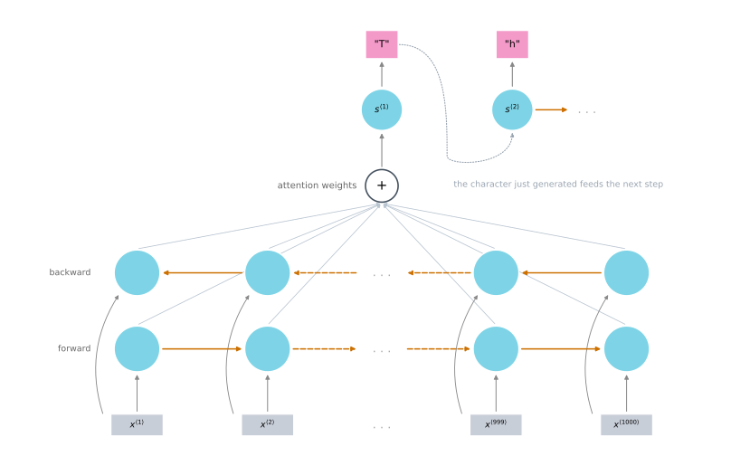
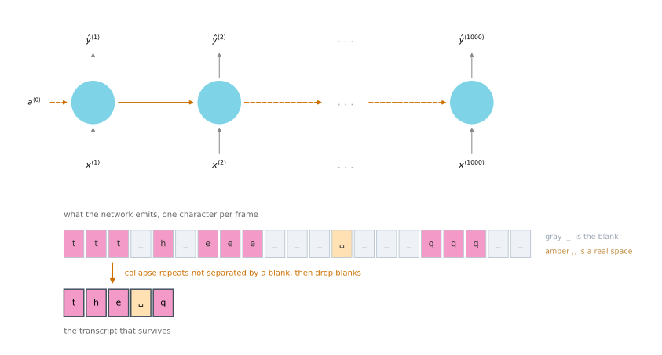
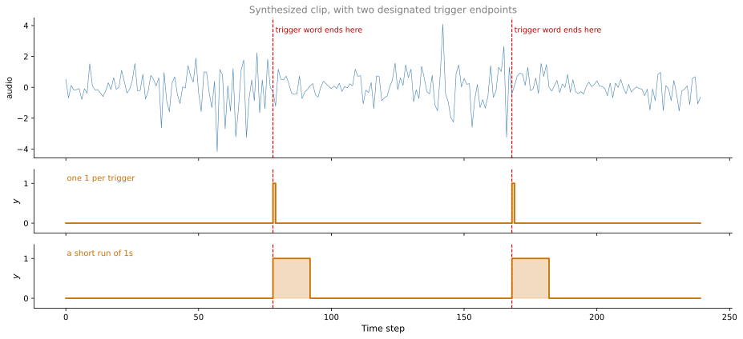

![Two stacked panels sharing a time axis over a two second recording of speech. The upper panel plots the waveform as amplitude against time, showing four bursts of sound separated by quiet. The lower panel plots the spectrogram of the same clip, with frequency on the vertical axis up to 5000 hertz and brighter color where more energy sits. Each burst shows a stack of evenly spaced harmonic stripes in the low frequencies, brighter formant bands above them, and diffuse high frequency energy during the consonants.](speech-recognition-and-trigger-word-detection_files/figure-html/cell-2-output-1.svg)
Speech Recognition and Trigger Word Detection
deep-learning
sequence-models
speech-recognition
audio
spectrogram
ctc
attention
trigger-word-detection
How sequence to sequence models read audio, with spectrograms, the attention and CTC approaches to transcription, and a trigger word detector.
One of the most exciting developments with sequence to sequence models has been the rise of very accurate speech recognition. This page applies those models to audio data.
Speech Recognition Problem
In speech recognition you are given an audio clip \(x\), and the job is to automatically produce a text transcript \(y\).
Plot an audio clip and the horizontal axis is time. What a microphone measures is minuscule changes in air pressure, which is also how your ear hears, detecting little changes in air pressure generated by a speaker or a headset. So an audio clip plots air pressure against time. If the clip is someone saying the quick brown fox, then a speech recognition algorithm should take that clip and output that transcript.
Even the human ear does not process raw waveforms. It has physical structures that measure the intensity of different frequencies. So a common pre-processing step for audio is to take the raw clip and generate a spectrogram. That plot has time on the horizontal axis, frequency on the vertical axis, and color intensity showing the amount of energy, meaning how loud the sound is at each frequency at each moment. You may also hear these called filter bank outputs. Passing a spectrogram rather than a raw waveform into the learning algorithm is standard, and the human ear performs a fairly similar computation.
From Phonemes to End-to-End Learning
Once upon a time, speech recognition systems were built using phonemes, hand-engineered basic units of sound. The phrase the quick brown fox would be written out in phonemes as something like de, kwik, braun, and so on. These are simplified, since the official phonemes use more complicated notation, but the idea was that linguists hypothesized that writing audio down in terms of these basic units of sound was the best route to speech recognition.
With end-to-end deep learning, phoneme representations turn out to be unnecessary. You can build systems that take an audio clip and directly output a transcript, with no hand-engineered representation in between.
One of the things that made this possible was much larger datasets. An academic dataset for speech recognition might be 300 hours, and in academia 3,000 hours of transcribed audio would be considered a reasonable size, so plenty of research has been published on datasets of several thousand hours. The best commercial systems, though, are now trained on over 10,000 hours and sometimes over 100,000 hours of audio. Moving to much larger transcribed audio datasets, holding both \(x\) and \(y\), together with deep learning algorithms, is what has driven a lot of the progress.
Attention Model for Speech Recognition
So how do you build a speech recognition system? One option is the attention model from earlier this week. Put different time frames of the audio input along the bottom, and have an attention model output the transcript one character at a time.
On a small screen, scroll horizontally to see the full architecture.

Nothing about the architecture changes. The same context vector machinery that let a decoder look back at the right French word now lets it look back at the right stretch of audio, and the output alphabet is characters rather than words.
CTC Cost
Another method that works well for speech recognition is the CTC cost, which stands for connectionist temporal classification, due to Graves et al. (2006).
The idea starts from a network with an equal number of inputs and outputs, the many-to-many architecture where \(T_x = T_y\). The diagram below is drawn as a simple unidirectional RNN for clarity, but in practice this would usually be a bidirectional LSTM or bidirectional GRU, and usually a deeper model.
The catch is the number of time steps. In speech recognition the number of input time steps is much larger than the number of output time steps. Take 10 seconds of audio with features arriving at 100 hertz, meaning 100 samples per second. That is \(100 \times 10 = 1000\) inputs. But the transcript does not have a thousand characters. The phrase the quick brown fox, counting spaces, has only 19.
So what does the network do with a thousand output slots and 19 characters to place in them? The CTC cost function lets the RNN output something like this, where the underscore is a special blank character.
ttt_h_eee___ ___qqq__The basic rule is to collapse repeated characters not separated by a blank. Note that the blank character is not the space character. There genuinely is a space between the and quick, so a space has to be output. Collapsing under that rule turns the string above into the q, the beginning of the transcript.
On a small screen, scroll horizontally to see all the time steps.

By inserting blanks and repeating characters, the network can fill all thousand output slots and still represent a 19-character transcript. That is the whole trick. The paper by Graves and colleagues, along with Baidu’s Deep Speech system, used this idea to build effective speech recognition systems.
Attention models and CTC models are two different options for building these systems. Today, building a production scale speech recognition system is a significant effort and needs a very large dataset. Trigger word detection, covered next, is much easier and can be done with a more reasonable amount of data.
Trigger Word Detection
With the rise of speech recognition, more and more devices can be woken up with your voice. These are called trigger word detection systems.
| Device | Trigger word |
|---|---|
| Amazon Echo | Alexa |
| Baidu DuerOS powered devices | xiaodunihao |
| Apple Siri | Hey Siri |
| Google Home | Okay Google |
It is thanks to trigger word detection that you can walk into a living room holding an Amazon Echo, say Alexa, what time is it?, and have the device wake up on the word Alexa and answer the query. Build one of these yourself and you could make a computer do something by telling it computer, activate.
The literature on trigger word detection is still evolving, so there is no wide consensus yet on the best algorithm. What follows is one example of an algorithm you can use.
Take an audio clip and compute spectrogram features, which generates the features \(x^{\langle 1 \rangle}, x^{\langle 2 \rangle}, x^{\langle 3 \rangle}\) and so on that you pass through an RNN. All that remains is to define the target labels \(y\).
Suppose a point in the audio clip is where someone has just finished saying the trigger word. In the training set, set the target label to 0 for everything before that point, and to 1 right after it. If a little later the trigger word is said again, set the target label to 1 right after that too.
On a small screen, scroll horizontally to inspect the whole clip.

This labeling scheme works reasonably well. One slight disadvantage is that it creates a very imbalanced training set, with many more 0s than 1s.
So one other thing you could do, which is a bit of a hack but makes the model easier to train, is to output a few 1s for a fixed period of time rather than at only a single time step, before reverting to 0. That evens out the ratio of 1s to 0s somewhat. It is still a hack, and it is worth being honest that it is one, but it helps.
NoteWhat You Should Remember
- A spectrogram, not the raw waveform, is the usual input to a speech model, and the human ear performs a broadly similar decomposition into frequencies.
- End-to-end deep learning removed the need for hand-engineered phonemes, and much larger transcribed datasets are what made that possible.
- Attention and CTC are two workable approaches to transcription, not competitors to be chosen between on principle.
- CTC exists because audio has far more input steps than the transcript has characters. Blanks and repeats let a thousand outputs encode 19 characters.
- The collapse rule joins repeated characters that are not separated by a blank, and the blank character is not the space character.
- Trigger word detection needs no new machinery. It is an RNN over spectrogram features with a 0 or 1 target, and the only real design question is how to label.
- Labeling a single 1 per trigger word gives a badly imbalanced training set, and stretching it to a short run of 1s is a hack that helps.
Review Questions
1. Why is a spectrogram the usual input to a speech model rather than the raw waveform?
Answer
Because it exposes the information the task actually depends on. A waveform is a single amplitude per instant, while a spectrogram splits each moment into how much energy sits at each frequency, which is what distinguishes one sound from another. There is a biological argument alongside the practical one, since the human ear does not process raw waveforms either. It has physical structures that measure the intensity of different frequencies, so the pre-processing step mirrors a computation the ear already performs.
1. What changed to make hand-engineered phoneme representations unnecessary?
Answer
End-to-end deep learning, made workable by much larger datasets. Linguists had hypothesized that breaking language into basic units of sound was the best route to recognition, and systems were built that way. Given enough transcribed audio, a model can learn to map the clip straight to the transcript, with no intermediate representation designed by hand. Academic datasets run to 300 or 3,000 hours, while the best commercial systems train on over 10,000 hours and sometimes over 100,000.
1. A 10 second clip with features arriving at 100 hertz gives 1000 input time steps, but the quick brown fox is 19 characters. How does CTC reconcile the two?
Answer
By letting the network fill all 1000 output slots with repeated characters and blanks, then collapsing. The network emits one symbol per input frame, so it produces 1000 of them, but the collapse rule joins repeated characters not separated by a blank and drops the blanks themselves. What survives is the 19-character transcript. The network never has to decide how to compress time, because the number of outputs stays equal to the number of inputs and the rule does the reduction afterwards.
1. Under the collapse rule, what does the output ttt_h_eee___ ___qqq__ become, and why does the space survive?
Answer
It becomes the q. The three t characters are adjacent with no blank between them, so they collapse to one t. The same happens to the three e characters and the three q characters. Every underscore is a blank and is dropped.
The space survives because the blank and the space are two different characters. The underscore is a special symbol that exists only to separate repeats and is discarded, while the space is a genuine character in the transcript, since the quick really does have a space in it. Confusing the two would give theq.
1. Under the CTC model, what does this string collapse to?
aaa_aaaaaa________rr_dddddddd_______v_aaaaaa_rrrr________kkaaaaaaaaaarrddddddddddvaaaaaarrrrkkardvarkaa rd var kaardvark
Answer
d. Work along the string. aaa collapses to one a, then a blank, then aaaaaa collapses to another a. Both survive, because the blank between them stops the two runs from merging, so the result opens with aa. Then blanks, rr to r, a blank, dddddddd to d, blanks, v, a blank, aaaaaa to a, a blank, rrrr to r, blanks, and kk to k. That spells aardvark.
Option a ignores the collapse rule altogether and keeps long runs of repeated characters, though its run lengths do not match the emitted string exactly either. Option b collapses too hard, merging the two separated runs of a into one and losing the doubled letter that the blank was there to protect. Option c mistakes the blank for a space. Blanks are discarded and print nothing, while a space would be a real character in the transcript.
1. In trigger word detection, what problem does labeling a single 1 after each trigger word create, and what is the fix?
Answer
It creates a very imbalanced training set, with a lot more 0s than 1s, since each trigger word contributes a single positive label to a clip made of many time steps.
The fix is to output a few 1s for a fixed period after the trigger word rather than at a single step, before reverting to 0, which evens out the ratio somewhat. This is a hack rather than a principled correction, and it is worth naming it as one.
1. What kind of architecture is the trigger word detector, and where do its inputs come from?
An encoder-decoder, taking raw audio and emitting a word
A many-to-many RNN over spectrogram features, emitting a 0 or 1 at every step
An attention model over characters
A many-to-one RNN that reads the whole clip and emits a single label
Answer
b. The clip is turned into spectrogram features \(x^{\langle 1 \rangle}, x^{\langle 2 \rangle}, x^{\langle 3 \rangle}\) and so on, which pass through an RNN that emits a label at every time step, so the input and output sequences have the same length. Option d is wrong because a single label for the whole clip could not say when the trigger word occurred, which is the entire point. The remarkable thing about this system is how little new machinery it needs. Everything above is a component already covered, and only the labeling scheme is specific to the task.
1. In trigger word detection, if the target label for \(x^{\langle t \rangle}\) is 1, what does that mean?
Someone has just finished saying the trigger word at time \(t\)
The total time the trigger word detection algorithm has been running is 1
Only one word has been stated
There is exactly one trigger word
Answer
a. The label is a per-time-step indicator of whether the trigger word has just been said, which is why the target is a sequence as long as the input rather than a single number. Setting it to 1 immediately after the trigger word finishes is what teaches the model when the wake word ended, and it is what lets the same clip carry two positives if the word is said twice.
The other options all read the 1 as a count of something, whether elapsed time, words spoken, or trigger words in the clip. None of those would be a per-time-step label, and none would tell the device the moment at which to wake up.
References
- Graves, A., Fernández, S., Gomez, F., & Schmidhuber, J. (2006). Connectionist temporal classification: Labelling unsegmented sequence data with recurrent neural networks. In Proceedings of the 23rd International Conference on Machine Learning (pp. 369-376). ACM Press. https://doi.org/10.1145/1143844.1143891